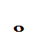
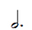
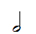
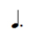
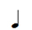
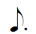
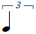
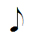
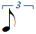
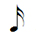

|
Modus
v0.53
C++ Music Library
|
General:
Overview
License
Components
Nomenclature
Concepts:
Musical notes
Time
Main objects
Sound generators
Sample-sets
Sample-packs
Project Settings:
Project Settings
Working with Modus:
Note maps
Scripts
Pitch values
Callbacks
Representing musical performances
Tips and tricks
Modus is an open source, cross-platform C++ library which allows you to handle music from code. This means that you can:
Modus works with instrument objects, which represent the instruments in real life, in addition to other more abstract concepts such as samplers, voices, noise generators or whatever. You need to attach each instrument object to a sound generator to make it sound, and then you can play notes by just calling a method.
Besides the possibility of calling the instrument object to play each note, you can also use a powerful tool: the score object. This object tells an instrument what to play, and has the advantage that can be programmed dynamically. In order to make this process easier, Modus provides you with a script syntax, so you can just write a script and load it into the score, either from a plain text file or through a string inside the code.
But if you don't want to bother to write scripts for entire songs -what might be a lot of work-, just use the MIDI-to-MScore tool, which generate scripts automatically from MIDI files, so you have the possibility to utilize your favorite MIDI editor or score editing software to enter the music and then create scripts for Modus.
Modus provides objects to work with harmony and scales too, including lists -in the same way of the score object- and static classes which allow you to easily build note maps with scales, chords and voicings.
Along with this release of Modus a MIDI sound generator, based on the RtMidi library, in addition to three different audio sound generators based on the following engines have been included:
Also, you have at your disposal some instruments to be used with these sound generators, including complete sample-packs, so you can start to generate music from the first moment!
Modus has been released under the MIT license. That means that you can freely use Modus both for commercial and non-commercial applications and you are also allowed to modify and/or distribute it (in that case, please read "license.txt").
Modus is made up of the following componentes:
Base library. Every application that makes use of Modus must include this library. The base library is written in standard C++, so it's platform independent.
Sound generators. Objects that depend on external audio/MIDI engines and are capable of generating sound through the sound card. A sound generator may be cross-platform as long as the base engine is also cross-platform.
In Modus you will always work with musical notes. Each note is defined by 8 values, some of which are not required. Thinking on the users who are used to the MIDI protocol, Modus was intended to work with the same range of values to define musical notes:
Pitch. Defined by the MIDI pitch value, where the corresponding value for the middle C (C4) is 60. Pitch 0 means "rest".
The rest of the values that define a musical note in Modus are:
Duration. Given in ticks (see "Time"). Duration 0 means that the note must not be released until the sample's end is reached or a rest comes.
Channel. For the instruments to be polifonic (that is to say, to be able to play several notes at the same time), you have to work with channels. If an instrument has N channels, that means that it is capable to play up to N independent notes at the same time. For example, a guitar would have 6 channels since it has 6 independent strings. The channel is defined through a value between 0 and N-1.
Mode. Sometimes you may want to use an instrument in some different ways instead of creating two or more instruments (for example, a trumpet can play with or without mute, or a drum set can be played either with sticks or with brushes). With this purposal you have the mode field at your disposal, so that you would only have to specify the mode for each note to indicate how it should be played.
The time positions in Modus are defined by 3 values: measure, beat and tick. The "tick" is the smallest unit of time in Modus. The number of beats per measure will be defined by the user, whereas each beat always contains 24 ticks. Thus, regardless of the musical time unit you want to use you will have great versatility to represent what you want. In the following tables you can see the relationship between the rhythmic figures and the number of ticks:
| Figure | Number of ticks |
|---|---|

| 96 |

| 72 |

| 48 |

| 36 |

| 24 |

| 18 |

| 16 |

| 12 |

| 8 |

| 6 |
| 3 |
| Figure | Number of ticks |
|---|---|
| 48 | |
| 24 | |
| 16 | |
| 12 | |
| 8 | |
| 4 | |
| 2 |
The instrument object represents something that can play music, like, for example, a real instrument. It provides you with the playNote() and release() methods, so it's very simple and intuitive to use.
To create an instrument object, you need to specify a number of channels. The number of channels an instrument has determines how many independent notes the instrument can play at the same time. For example, a string instrument would have so many channels as strings, whereas a wind instrument would have only one channel (unless you want it to be able to produce multiphonics or something like that).
Besides just playing and releasing notes, other interesting things you can do with an instrument are bend notes, use a "damper pedal" (sustain the notes), define a transposition, set an intensity variation or define callback functions to be called when specific events occur (see "Callbacks" section).
This object is the heart of all applications which utilize Modus. It calls a callback function each time a new tick comes, so that you will be able to update the instruments and do all the stuff you need from there. For the timer to work, you need to update it from inside a loop. You can either make this call from an independent thread or include it into the main loop (in case your application has one):
The update() method returns a boolean value that indicates whether the update took place or not.
The timer object can be used in two different ways:
Fixed values. It has a tempo and a number of beats per measure, and these values are fixed. You can change them as many times as you want manually, though.
It's basically an ordered list of notes to play. The good part of the score object is that its data can be modified in real time, so you have the possibility to use it with different purposes:
As a traditional score: write the score, and then an instrument will perform the music that has been written on it.
As a kind of buffer: write notes on the score directly from software and play them after (for example, a music recorder).
The sound generator is the way through which the instrument objects produce sound in Modus. They are based on external libraries and can generate sound either by synthesis (MIDI) or by playing digital audio samples (audio). When you want an instrument object to sound, you only have to create an instance of a sound generator, configure it and attach it to the instrument object.
First of all, you should read some notes regarding the audio sound generators:
Never delete a MCSoundGenAudio object after having released the corresponding audio system. That would cause an error due to invalid memory access.
You don't need to unload the samples that you previously loaded by calling unloadSamples(), unless you want to replace them with others. That is because the destructor of the class does it already when you delete the object.
When using FMOD-based sound generators, make sure that you are calling periodically the FMOD system's update() method, since through this method FMOD handles the virtualization of the voices and allows you to use as many channels as you want with your instruments. In addition, you will need to update FMOD if you want your instruments to change their positions, either on stereo or multichannel speaker systems.
The sound generators must be updated with each new tick, but if the sound generator is attached to an instrument, you will only need to update the instrument, since the instrument updates its sound generator automatically.
All the audio-based sound generators work with audio samples. Each time a note is requested to be played, the sound generator finds the appropriate sample to make it sound. For the sound generator to know which sample must be played for each note, you need to define a list of sample-sets. In order to define a sample-set, the following parameters must be specified:
ID: each sample-set in the sound generator will have its own ID number.
Path: path in which the sample files are located, with the '/' or '\' symbol (depending on the platform) at the end.
Format: extension of the sound files, without dot at the beginning.
Mode: the samples contained in the sample-set will be assigned to an unique mode.
Intensity range: the samples contained in the sample-set will be selected only when the note's intensity is inside this range.
Once you have defined all these values for the sample-set (MSSampleSet struct), then you can add it to the sound generator's sample-set list through the addSampleSet() method. When all the sample-sets you want to use for the sound generator have been added, you just have to call the loadSamples() method to load the sample files into memory.
Previously, of course you need to have all the sample files ready to be loaded. For each sample-set:
Select the audio files you want to load. Make sure that all of them have the same format and the same extension.
Place them together into the same folder (that will be the folder you have to specify in the field "path").
The sample-packs are a very comfortable way to manage sample-sets. A sample-pack is an unique file which contains both information about all the sample-sets included in it and all the audio files defined by these sample-sets. The sample-pack files have the extension ".msp" ("Modus Sample Pack").
In order to create your own sample-packs, you have to prepare the audio files in the same way it was explained in the previous section, and then you can use the msamplepack tool (included with Modus).
To load a sample-pack file from a sound generator object, you only have to call the loadSamplePack() method.
Whatever are the development environment, compiler or linker you are working with, you will need to follow these steps to set up a project that utilizes Modus:
Add include directories. Modus/include and Modus/soundgen are required in all cases, and if you want to use any extension you will also need to add Modus/extensions.
Add Modus library. You will find the appropriate library file in the Modus/lib/[platform] directory.
Add sound generator's source files. This means that you have to add the cpp files in the Modus/soundgen/[chosen_soundgen] directory.
Note for iOS: use "mxsoundgenopenal.mm" instead of "mxsoundgenopenal.cpp".
Add sound generator's external dependencies. All the files you may need are inside the Modus/soundgen/externals/[library] directory. If you are using OpenAL, don't forget to include also the Ogg Vorbis libraries in case you want to load audio samples in this format (the sample-packs that come along with the examples are made up of Ogg Vorbis audio files), as OpenAL does not support compressed audio decoding in itself.
Note for iOS: OpenAL is included as a framework, so you will just need to add OpenAL.framework to the project to use the OpenAL-based sound generator. On the other hand, keep in mind that you can work with any compressed audio format supported by the AudioToolBox framework (such as AAC or IMA4).
One interesting feature in Modus is the MTNoteMap. It just consist of a list of notes (pitches), but may be very useful for some particular tasks, though.
The MCNoteMaps static class offers several methods to work with note maps
MCChords works with note maps, considered as chord patterns
Note maps can be used to restrict the set of notes which should be allowed to be played in a particular moment. For example, to improvise you might want to let your algorithm generate notes that belong to a specific scale inside a specific range.
They can be written either in strings or text files and then loaded from some of the objects, through the loadScriptFromString() and the loadScriptFromFile() methods, respectively. In addition, you have the possibility of creating binary files from previously written text files using the included mscript2bin tool, and load them with the loadScriptFromBinaryData() and the loadScriptFromBinaryFile() methods. Scripts in binary format are smaller and faster to load than scripts in text format, but they cannot be modified once generated.
Since a score object is basically a list of notes attached to time positions, there are commands to specify note values and time values. The following table includes the commands which are referred to the time:
| Command | Description | Value range |
|---|---|---|
| bpm:<val> | Beats per measure | 1-... |
| [m:<val>] | Time position: measure | 0-... |
| [b:<val>] | Time position: beat | 1-... |
| [t:<val>] | Time position: tick | 0-23 |
Through these commands the time position's cursor will be set at the specified position, so the next notes you write will have assigned that time position. The commands referred to time positions must always be inside square brackets and can be combined as follows:
To add notes to the score, you can use these commands:
| Command | Description | Value range |
|---|---|---|
| p:<val> | Note pitch | 0-255 |
| ch:<val> | Channel | 0-255 |
| d:<val> | Note duration | 0-255 |
| i:<val> | Note intensity | 0-127 |
| mode:<val> | Mode | 0-255 |
| mda:<val> | Metadata A | 0-255 |
| mdb:<val> | Metadata B | 0-255 |
| mdc:<val> | Metadata C | 0-255 |
| + | Add duration to the current time position | — |
| > | Insert note into score | — |
It's important to keep in mind that you don't need to set all these values each time you write a note on the script, but they stay until you change them again. This means that if you write "i:96" and then several notes, all these notes will be interpreted with 96 as their intensity. There is one only exception: the metadata values, which are automatically set to 0 every time there is an insert command (>) on the script.
The add duration command (+) may be useful if you want to write a legato-style line, so that the current note's release moment is the same than the moment in which the next one must start to sound. If you place the add duration command (+) and the insert command (>) on the same line, the duration of the current note will be added to the current time position automatically, so you won't need to specify the time position in which the next note comes:
Examples:
First of all, let's talk about the definition string: in order to reference chord patterns from the scripts, you will need to have assigned an unique ID number to each chord pattern you want to have at your disposal. This can be done by writing the definition string. To know its structure and be able to customize it, you can take a look to the default definition placed both in the "scripts" directory and in the "mchords.cpp" source file:
Once you have either built your own definition string or decided to use the one that comes by default, then you can write the scripts based on it. The commands referred to the time position are the same that you already know. The rest of the commands are:
| Command | Description | Value range |
|---|---|---|
| root:<val> | Root note | 0-11 |
| chord:<val> | Chord pattern's ID number | 0-... |
| bass:<val> | Bass note (only if different than root) | 0-11 |
| tensions:<val,...> | List of tensions, separated by commas | 0-... |
| > | Insert entry | — |
Example:
The definition string works in the same way than we have already seen with the harmony pattern. In this case the default definition is placed both in the "scripts" directory and in the "mscales.cpp" source file:
The time position commands are also the same, whereas the specific commands work as follows:
| Command | Description | Value range |
|---|---|---|
| root:<val> | Root note | 0-11 |
| scale:<val> | Scale pattern's ID number | 0-... |
| > | Insert entry | — |
Example:
The song structure scripts don't use a time position cursor, so there are no square-brackets commands. When a new value is assigned to the tempo, the target tempo receive the same value unless you specify another value for it, so you will only have to worry about the target tempo if you want to program an accelerando or ritardando.
To write song structure scripts you have the following commands at your disposal:
| Command | Description | Value range |
|---|---|---|
| bpm:<val> | Beats per measure | 1-... |
| from:<val> | First measure of the section | 1-... |
| to:<val> | Last measure of the section | 1-... |
| tempo:<val> | Tempo | 1-... |
| target:<val> | Target tempo (accelerandos, ritardandos) | 1-... |
| > | Insert entry | — |
Example:
As we have already seen, in a MSNote structure the pitch is the note's MIDI pitch value. A MIDI pitch can take values from 0 ("note off" in MIDI, "rest" in Modus) to 127, since it is a 7-bit value, whereas a MSNote pitch is a 8-bit value, so it can have values up to 255. Thus, pitch values between 128 and 255 will have a special meaning in Modus: some are predefined control values, and the rest are available for you to interpret them in the way you want.
The predefined control values are:
Pitch 128 - Bending.
Pitch 129 - Damper.
Pitch 130 - Intensity change.
Pitch 131 - Set release time.
Pitch 132 - Set vibrato.
Besides the already known timer's tick callback, you can ask Modus to let you know when some events occur, so you don't need to do a continuous polling to check them:
| Callback | Tick |
|---|---|
| Called when | A new tick has come |
| Information | Current time position |
| Method to register | setCallbackTick() |
| Callback | Section |
|---|---|
| Called when | A new section has come (it must have been defined in a song structure object) |
| Information | Number of the current section |
| Method to register | setCallbackSection() |
| Callback | End |
|---|---|
| Called when | The song has ended (all the song's sections must have been defined in a song structure object) |
| Information | - |
| Method to register | setCallbackEnd() |
| Callback | Play |
|---|---|
| Called when | A note is being played |
| Information | Note that is being played |
| Method to register | setCallbackPlay() |
| Callback | Next note |
|---|---|
| Called when | A note is being played and there are more notes in the score |
| Information | Note that comes after the current note or chord, current time moment and next note's time moment (in case several notes are coming together this method will be called once for each note) |
| Method to register | setCallbackNextNote() |
| Callback | Release |
|---|---|
| Called when | A note is being released |
| Information | Note that is being released |
| Method to register | setCallbackRelease() |
| Callback | Bending |
|---|---|
| Called when | A note is being bended |
| Information | Note and frequency variation in cents |
| Method to register | setCallbackBending() |
| Callback | Damper |
|---|---|
| Called when | The state of the damper pedal has changed |
| Information | Current state of the damper pedal |
| Method to register | setCallbackDamper() |
| Callback | Intensity |
|---|---|
| Called when | A note's intensity is being changed |
| Information | Note and current intensity |
| Method to register | setCallbackIntensity() |
These callback services you have just known are a very good way to represent visually musical performances. A first approach could be register play and release callback functions and do something on the screen each time one of these events happens.
However, this solution is not valid if you want to include animations, because in that case you will need to know which note is the next one and when it must be played before it comes (for example, to take the player's arm to the correct place before playing the note). For this purpose the instrument object's "Next note" service may be particularly useful: it calls your previously defined function each time a note or chord is played, indicating the current time moment, the time moment in which the next note is going to be played, and which note it is.
But if you want to go one step further and represent a performance accurately, besides the animations you should take into account that into each note (MSNote structure) there are three metadata fields (MDA, MDB, MDC) at your disposal, which can store unsigned char values (from 0 to 255). These values will be typically utilized for representing technical aspects of the performance, for example:
Lastly, you may also want to include other things such as musician's movements or something like that. For this purposal, the best way would be to use pitch values out of the instrument's range to denote additional things that you can define and then interpret in the way you want.
In summary: as you can see, with Modus you have a complete platform to represent or simulate musical performances. All you have to do is fill your scores with the appropriate values along with a good graphic work, and you will be able to achieve excelent results. In the following table you can see all the possibilities together:
| If you want to represent... | ...then you'll need |
|---|---|
| Schematic performance | Play callback Release callback [Damper callback] [Bending callback] [Intensity callback] |
| Animations | Next note callback |
| Technical details | Metadata fields |
| Musician's movements, gestures, etc. | Pitches out of range |
Loop management. This can be done easily inside the timer's tick callback function, by checking the current time position and displacing the score each time a multiple of the length of the loop -given in number of measures- is reached:
The loop management code must be always placed before the instrument's update call. Otherwise, the note(s) on the measure 1, beat 1 and tick 0 in the score wouldn't be played.
Score on countoff. Notes cannot be placed into a score to be played before the measure 0, but that can be done by following this simple trick (remember that you can make displacements with negative numbers):
"Repeat signs" in a score from code. If you want a certain section to be repeated several times, you can use a score object to store that section and then add it to the final score as many times as you need:
Separated hands. Don't forget the possibility to write several scripts and combine them to be played by the same instrument when the music to write is too complex. For example, in a piano piece you could write a script for each hand and then put it all together:
Sforzando-piano. For wind instruments it can be achieved by playing a note with a high intensity and then setting a quick change of intensity like this:
Metronome. It's very easy to create a simple metronome in case you need a tempo reference. One way to do it is playing a note inside the timer's tick callback function, like this:
Remember that the instrument's update must be always done after the rest of the code in the timer tick callback function!
Improviser. Try not to generate music for too many measures when you use the improviser, since the improvise() method could need much CPU usage and it might appear a small pause in the music each time you call it. If you need to generate a large number of measures, you can divide them into smaller pieces so the improviser does not take so long -for example, for 64 measures you could call the improviser four times with 16, or even eight times with 8-. The setPreviousNote() and setIntensity() methods are provided for you to be able to ensure the continuity of the improvisation.
 1.8.4
1.8.4